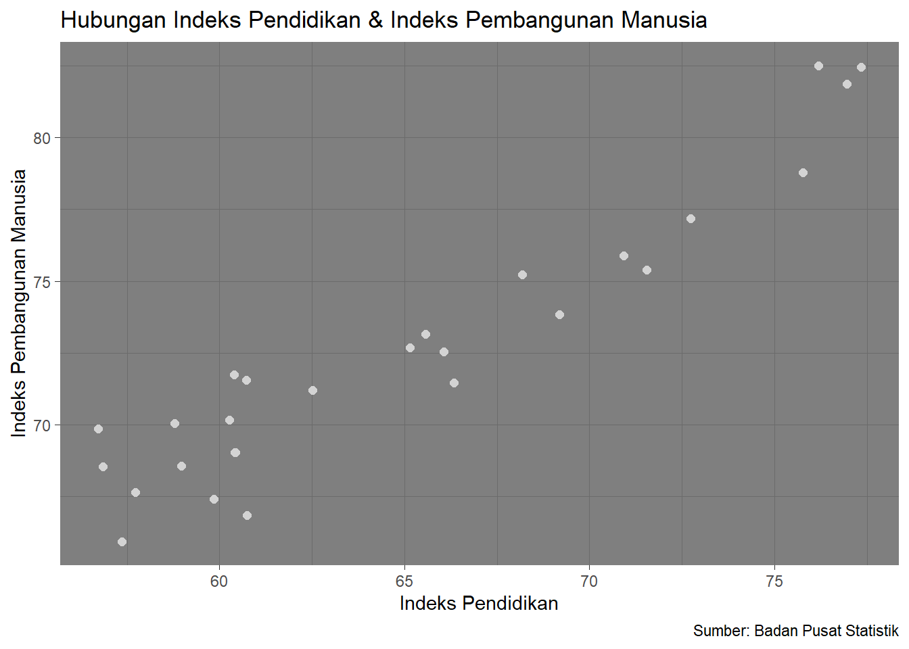

library("readxl")
library("ggplot2")
library("png")Hubungan antara Pendidikan & Indeks Pembangunan Manusia di Provinsi Jawa Barat pada Tahun 2022
Metode Penelitian Politeknik APP Jakarta

1 Pendahuluan
1.1 Latar belakang
Pendidikan memiliki peran krusial dalam pembentukan Indeks Pembangunan Manusia (IPM) di suatu wilayah. Penelitian ini bertujuan untuk menganalisis hubungan antara pendidikan dengan IPM di Jawa Barat pada tahun 2022. Pemahaman ini dapat menjadi esensial dalam upaya meningkatkan kesejahteraan masyarakat.
1.2 Ruang lingkup
Penelitian ini berfokus kepada hubungan pendidikan dengan Indeks Pembangunan Manusia (IPM) pada tahun 2022.Melalui pendekatan kuantitatif, penelitian ini akan menggunakan data statistik terkini dan relevan untuk memberikan pemahaman yang mendalam tentang kontribusi pendidikan terhadap pembangunan manusia di Jawa Barat.
1.3 Rumusan masalah
Bagaimana kondisi pendidikan dan IPM di Jawa Barat pada tahun 2022?
Apakah terdapat hubungan yang signifikan antara pendidikan dengan IPM di Jawa Barat pada tahun 2022?
1.4 Tujuan dan manfaat penelitian
Penelitian ini bertujuan untuk menganalisis hubungan pendidikan terhadap IPM di Jawa Barat pada tahun 2022. Manfaat penelitian ini diharapkan dapat memberi kontribusi dan pemahaman mengenai hubungan pendidikan dengan pembangunan manusia, memberikan pandangan untuk perumusan kebijakan yang lebih efektif, serta memberikan pemahaman kepada masyarakat tentang urgensi investasi pendidikan dalam meningkatkan pembangunan manusia di Jawa Barat maupun di seluruh Indonesia.
1.5 Package
Package di dalam penelitian ini adalah sebagai berikut.
2 Studi pustaka
Pendidikan akan berjalan dengan lancar jika disertai dengan pembangunan yang layak terhadap sarana dan prasarana dalam proses pendidikan berlangsung. Pendidikan dapat menghasilkan orang-orang yang akan menunjang sebuah pembangunan. Begitupun sebaliknya, pembangunan dapat membantu menunjang jalannya pendidikan seperti pembangunan sarana ataupun prasarana yang membantu dalam pembelajaran. Suksesnya sebuah jalan pendidikan ditentukan oleh fasilitas yang mendukung media pembelajaran.
3 Metode penelitian
3.1 Data
Berikut ini adalah data yang telah diperoleh, berupa Indeks Pendidikan dan Indeks Pembangunan Manusia (IPM) di Jawa Barat pada tahun 2022.
| Kabupaten/Kota | Pendidikan % | IPM % |
|---|---|---|
| Bogor | 62.52 | 71.2 |
| Sukabumi | 57.73 | 67.64 |
| Cianjur | 57.36 | 65.94 |
| Bandung | 65.57 | 73.16 |
| Garut | 59.85 | 67.41 |
| Tasikmalaya | 60.74 | 66.84 |
| Ciamis | 66.33 | 71.45 |
| Kuningan | 60.27 | 70.16 |
| Cirebon | 58.78 | 70.06 |
| Majalengka | 58.97 | 68.56 |
| Sumedang | 65.15 | 72.69 |
| Indramayu | 56.85 | 68.55 |
| Subang | 56.72 | 69.87 |
| Purwakarta | 60.73 | 71.56 |
| Karawang | 60.39 | 71.74 |
| Bekasi | 68.18 | 75.22 |
| Bandung Barat | 60.43 | 69.04 |
| Pangandaran | 60.41 | 69.03 |
| Kota Bogor | 72.74 | 77.17 |
| Kota Sukabumi | 71.55 | 75.4 |
| Kota Bandung | 76.19 | 82.5 |
| Kota Cirebon | 70.93 | 75.89 |
| Kota Bekasi | 77.33 | 82.46 |
| Kota Depok | 76.96 | 81.86 |
| Kota Cimahi | 75.76 | 78.77 |
| Kota Tasikmalaya | 69.18 | 73.83 |
| Kota Banjar | 66.07 | 72.55 |
library("readxl")
dat<-read_excel("metopen(uas).xlsx")
head(dat)# A tibble: 6 × 2
Pendidikan IPM
<dbl> <dbl>
1 62.5 71.2
2 57.7 67.6
3 57.4 65.9
4 65.6 73.2
5 59.8 67.4
6 60.7 66.83.2 Metode analisis
Analisis ini menggunakan metode regresi univariat atau Ordinary Least Square (OLS) untuk mengukur hubungan antara pendidikan dan Indeks Pembangunan Manusia di Jawa Barat pada tahun 2022.
\[ y_{t}=\beta_0 + \beta_1 x_t+\mu_t \] di mana \(y_t\) adalah Indeks Pembangunan Manusia (IPM) dan \(x_t\) adalah Indeks Pendidikan.
4 Pembahasan
4.1 Pembahasan masalah
Berikut merupakan tampilan jika kedua variabel dihubungkan.
library("ggplot2")
ggplot(data=dat,aes(x=Pendidikan,y=IPM)) +
geom_point(color="lightgrey",size=2) +
labs(title="Hubungan Indeks Pendidikan & Indeks Pembangunan Manusia",
x="Indeks Pendidikan",
y="Indeks Pembangunan Manusia",
caption = "Sumber: Badan Pusat Statistik") +
theme_dark()
4.2 Analisis masalah
Berikut ini merupakan hasil regresinya.
reg<-lm(IPM~Pendidikan,data=dat)
summary(reg)
Call:
lm(formula = IPM ~ Pendidikan, data = dat)
Residuals:
Min 1Q Median 3Q Max
-2.97290 -0.91789 -0.07609 1.29321 2.72985
Coefficients:
Estimate Std. Error t value Pr(>|t|)
(Intercept) 29.42908 2.88261 10.21 2.11e-10 ***
Pendidikan 0.66486 0.04415 15.06 4.80e-14 ***
---
Signif. codes: 0 '***' 0.001 '**' 0.01 '*' 0.05 '.' 0.1 ' ' 1
Residual standard error: 1.517 on 25 degrees of freedom
Multiple R-squared: 0.9007, Adjusted R-squared: 0.8967
F-statistic: 226.8 on 1 and 25 DF, p-value: 4.805e-145 Kesimpulan
Berdasarkan hasil regresi tersebut, dapat disimpulkan bahwa terdapat hubungan yang signifikan antara pendidikan dengan IPM di Jawa Barat pada tahun 2022. Koefisien regresi pendidikan (0.66486) yang positif menunjukkan bahwa setiap peningkatan satu unit dalam tingkat pendidikan berkontribusi positif sebesar 0.66486 terhadap nilai IPM. P-value yang sangat rendah (4.805e-14) menunjukkan bahwa hubungan tersebut sangat signifikan secara statistik. Model regresi ini memiliki tingkat akurasi yang tinggi, dengan nilai Adjusted R-squared sebesar 0.8967, yang menyiratkan bahwa sekitar 89.67% variabilitas dalam IPM dapat dijelaskan oleh tingkat pendidikan. Hasil ini mendukung hipotesis bahwa peningkatan tingkat pendidikan berpotensi memberikan dampak positif yang besar pada Indeks Pembangunan Manusia.
6 Referensi
Jawa Barat, B. P. S. (t.t.-a). Indeks Pembangunan Manusia. Diambil 21 Januari 2024, dari https://jabar.bps.go.id/indicator/26/123/1/indeks-pembangunan-manusia.html
Jawa Barat, B. P. S. (t.t.-b). Indeks Pendidikan Jawa Barat. Diambil 21 Januari 2024, dari https://jabar.bps.go.id/indicator/26/121/1/indeks-pendidikan.html
Keterkaitan Antara Pendidikan dan Pembangunan. (2022, Juli 12). https://www.relasinasional.com/2022/11/keterkaitan-antara-pendidikan-dan.html